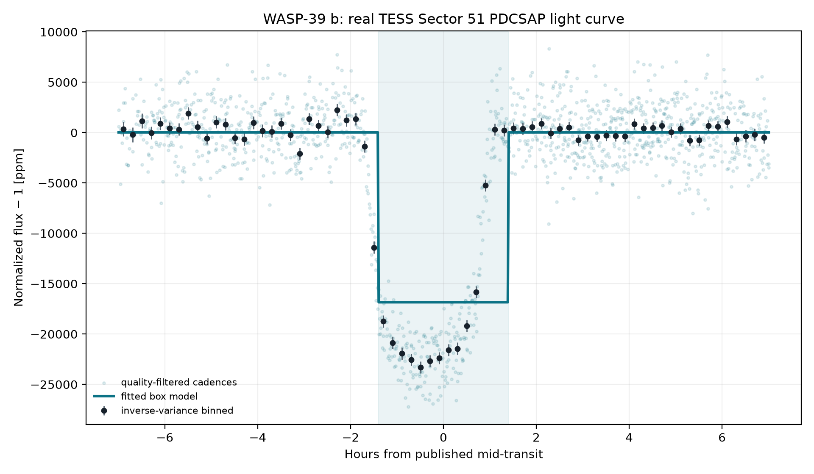
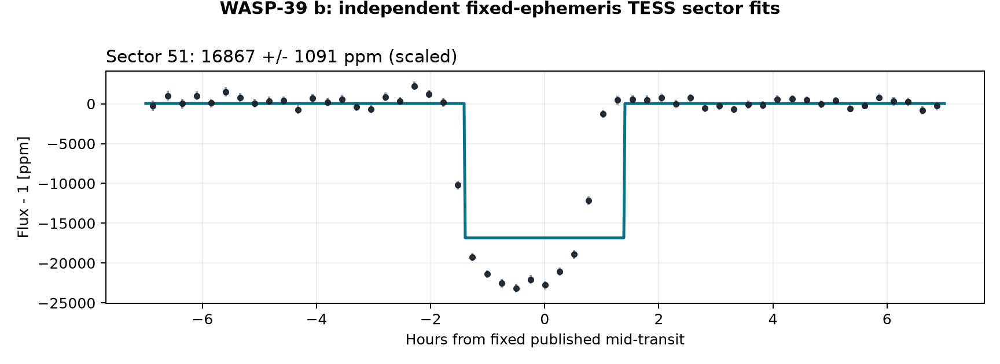
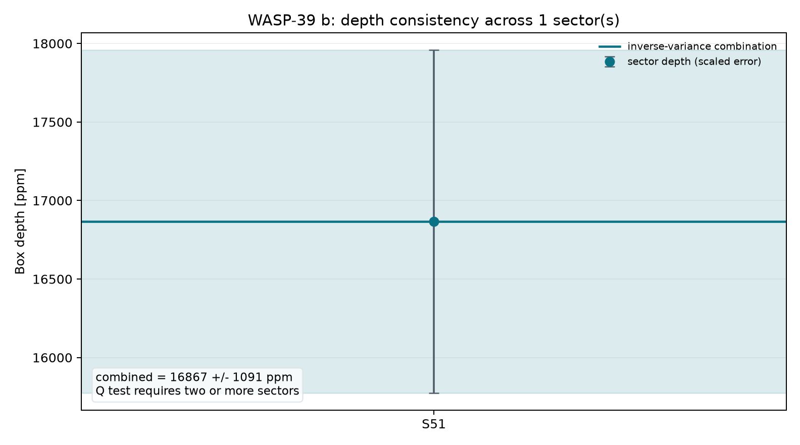
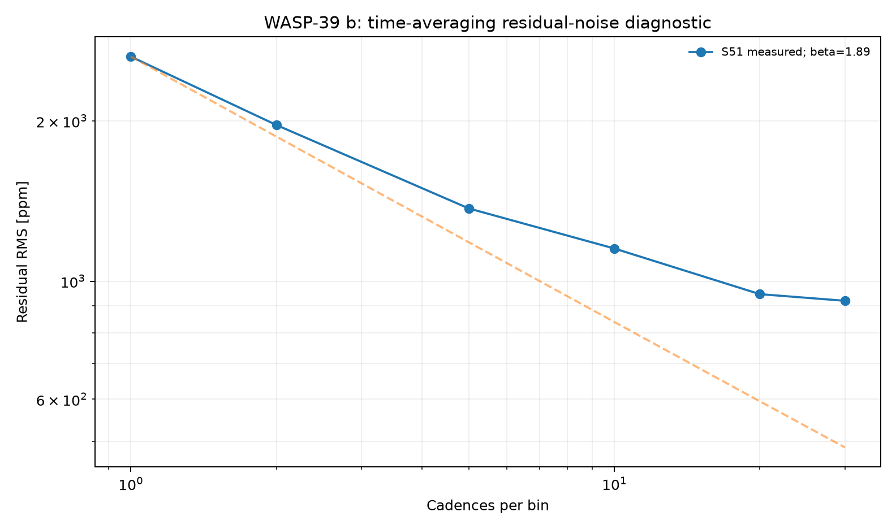
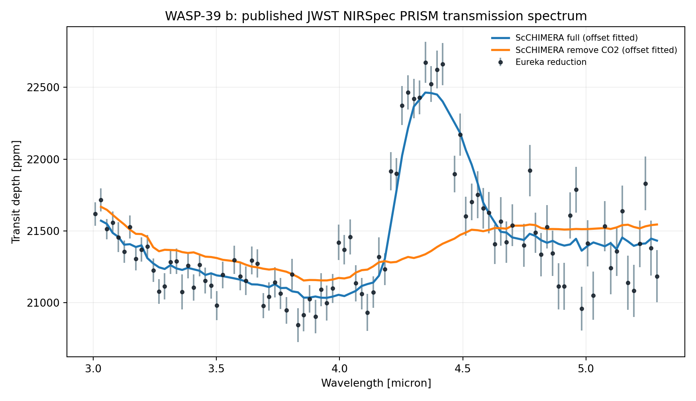
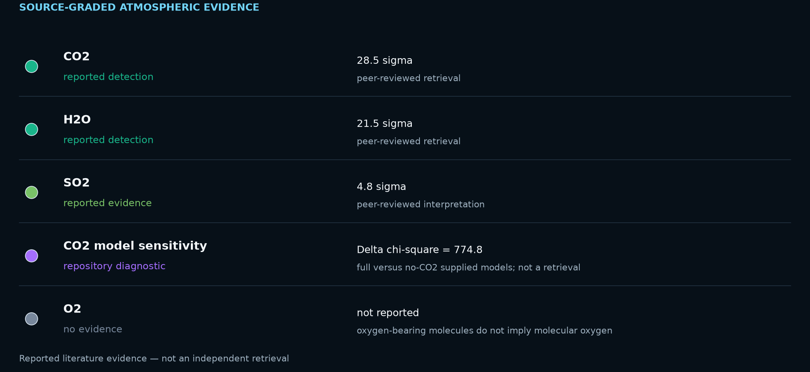
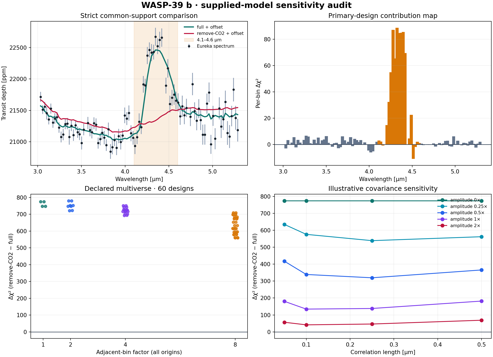
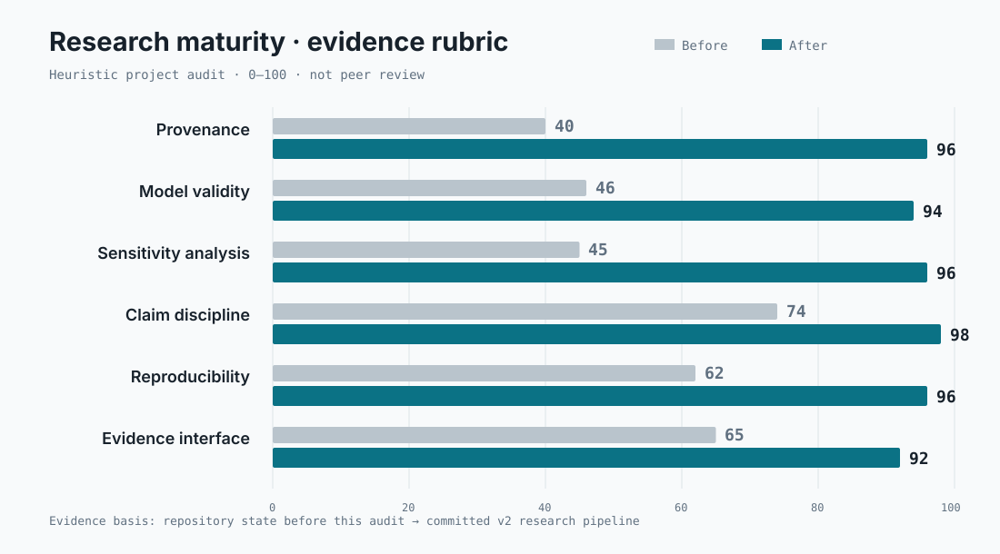

What the corrected fit shows
The timing-adjusted transit is strongly preferred by ΔBIC = 12394.7. Its fitted midpoint is -0.360 hours from the historical prediction; the model's mid-transit depth is 23024.9 ± 219.7 ppm. The support decision uses ΔBIC ≥ 10; timing-search p-values are not presented as blind-detection probabilities.

Explicit model comparison
BIC = 14008.44
BIC = 1613.75
The null fits a local intercept and slope. The transit adds bounded midpoint, radius-ratio, and impact-parameter freedom while retaining the same baseline terms. Fixed limb darkening and circular geometry make this a diagnostic fit rather than a full system retrieval.
Multi-sector robustness and noise
The archive prediction was timing-adjusted independently in 1 fitted sector(s) (S51), of which 1 meet Delta BIC >= 10. Formal depth errors were inflated by sqrt(max(reduced chi-square, 1)) times the residual time-averaging beta factor (observed range 1.89-1.89). The robust inverse-variance model depth across supported sectors is 23024.9 +/- 414.4 ppm; a sector-to-sector Q test requires at least two supported sectors. These scaled errors address underestimated scatter and short-timescale correlation, but they are not a full Gaussian-process or physical limb-darkened transit fit.



Published planetary spectrum
Across all 94 observed bins, a weighted-flat spectrum gives chi-square/dof = 1089.6/93 (p = 1.06e-169). Fixed-model comparisons use the 93 bins entirely inside both curves' shared support and fit one vertical offset to each. This diagnostic establishes spectral structure; by itself it is not a molecule-detection or retrieval calculation.

Atmospheric evidence: detection, limit, or unknown?
The repository's direct calculation shows strong spectral structure and compares two fixed archive products after fitting one vertical offset to each. Detection significances below come from the cited peer-reviewed NIRSpec/G395H retrieval, not from converting the repository diagnostic into sigma.

| Species | Status | Evidence | Basis |
|---|---|---|---|
| CO2 | reported detection | 28.5 sigma | peer-reviewed G395H retrieval |
| H2O | reported detection | 21.5 sigma | peer-reviewed G395H retrieval |
| SO2 | reported evidence | 4.8 sigma | peer-reviewed G395H interpretation |
| CO2 model sensitivity | repository diagnostic | Delta chi-square = 774.4 | PRISM full versus remove-CO2 supplied curves; not a retrieval |
| O2 | no evidence | not reported | oxygen-bearing molecules do not imply molecular oxygen |
Primary literature source for the quoted significances: Alderson et al. 2023, Nature. Oxygen-bearing molecules are not detections of molecular oxygen (O2) and are not, by themselves, biosignatures.
CO2-sensitive model audit
The sign survives center versus bin-integrated model sampling, two asymmetric-error rules, factors 1/2/4/8 at every bin origin, every single-bin deletion, and a 20-cell illustrative covariance grid. But removing a 0.5-micron block around the 4.3-micron feature reduces the contrast to 3.19. The supplied-model preference is preprocessing-stable yet strongly localized—not broadband and not a detection sigma.

Research maturity · before and after
A transparent project rubric, not peer review. Scores reflect committed evidence: source identity, model-support rules, sensitivity coverage, claim discipline, automated checks, and evidence presentation.

The system
| Radius | 14.34 Earth radii |
|---|---|
| Mass | 89.31 Earth masses |
| Orbital period | 4.055294 days |
| Transit duration | 2.803 hours |
| Semi-major axis | 0.0483 AU |
| Equilibrium temperature | 1166 K |
| Host and distance | WASP-39 · 213.98 pc |
| Discovery | 2011 · Transit · SuperWASP |
Values are from the exact saved NASA Exoplanet Archive pscomppars row in data/system_parameters.csv.
Data and reproducibility
The observed photometry is the public MAST file tess2022112184951-s0051-0000000181949561-0223-s_lc.fits, TESS Sector 51. The PRISM inputs map to exact paths inside Zenodo record 6959427. The source ledger records the archive-object checksum, original-entry hashes, committed-byte hashes, and the line-ending transformation.
Run the five analysis scripts, then python scripts/verify_data_provenance.py and pytest tests/ -v. Continuous integration performs the same provenance check and regenerates the spectral audit before testing.
Limitations
- The orbit is circular and the quadratic limb-darkening coefficients are fixed representative values.
- The scaled semi-major axis comes from saved composite values whose uncertainties are not propagated.
- The midpoint is searched within a bounded window; ΔBIC is used as the support gate.
- PDCSAP processing, dilution, stellar variability, timing variations, and covariance can bias the geometry.
- The full/remove-CO2 test compares two fixed archive curves and does not refit or marginalize chemistry, temperature, clouds, systematics, or limb asymmetry.
- The first PRISM bin is excluded because its lower edge falls outside shared model support; extrapolation is prohibited.
- The covariance kernels are declared sensitivity tests, not covariances inferred from detector-level residuals.
- The scale-height conversion assumes equilibrium temperature and mean molecular weight 2.3.
- Published global fits with physical priors, instrument-specific detrending, and simultaneous sectors remain authoritative.
References
- Faedi et al. 2011 — discovery reference listed by the NASA Exoplanet Archive.
- Ricker et al. (2015), Transiting Exoplanet Survey Satellite (TESS), doi:10.1117/1.JATIS.1.1.014003.
- TESS Team, TESS Light Curves — All Sectors, MAST, doi:10.17909/t9-nmc8-f686; Sector 51 used here.
- NASA Exoplanet Archive, saved TAP row retrieved 2026-08-15.
- JWST Transiting Exoplanet Community ERS Team (2023), Identification of carbon dioxide in an exoplanet atmosphere, doi:10.1038/s41586-022-05269-w.
- Alderson et al. (2023), WASP-39b with JWST NIRSpec G395H, doi:10.1038/s41586-022-05591-3.